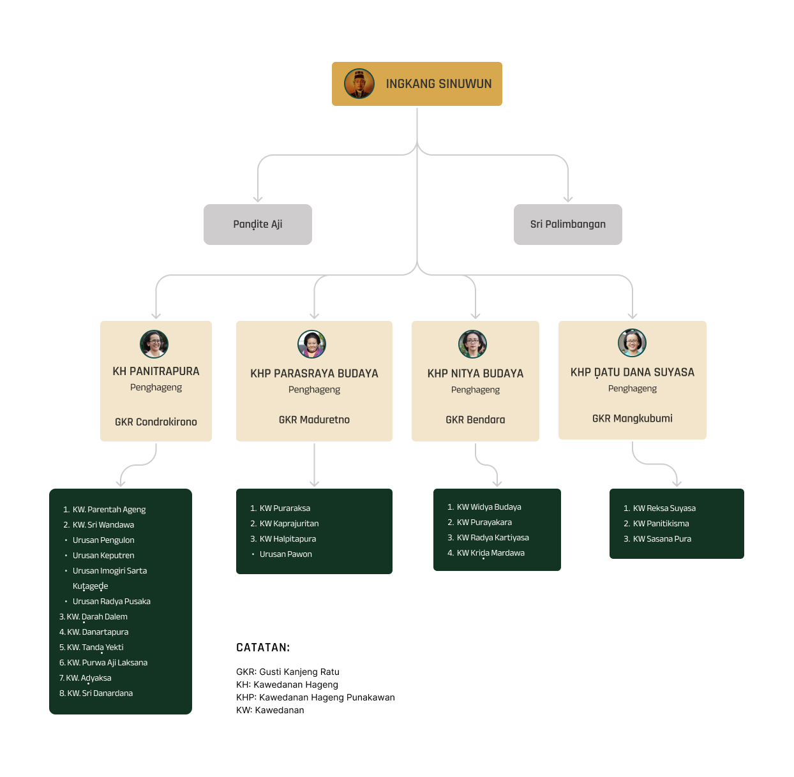

Cikal Bakal Karaton Yogyakarta
13 Februari 1755
Sejarah mencatat bahwa pada akhir abad ke-16 terdapat sebuah
kerajaan Islam di Jawa bagian tengah-selatan bernama Mataram.
Kerajaan ini berpusat di daerah Kota Gede (sebelah tenggara kota
Yogyakarta saat ini), kemudian pindah ke Kerta, Plered, Kartasura
dan Surakarta. Lambat laun, kewibawaan dan kedaulatan Mataram
semakin terganggu akibat intervensi Kumpeni Belanda. Akibatnya
timbul gerakan anti penjajah di bawah pimpinan Pangeran Mangkubumi
yang mengobarkan perlawanan terhadap Kumpeni beserta beberapa
tokoh lokal yang dapat dipengaruhi oleh Belanda seperti Patih
Pringgalaya. Untuk mengakhiri perselisihan tersebut dicapai
Perjanjian Giyanti atau Palihan Nagari.
Perjanjian Giyanti yang ditandatangani pada tanggal 13 Februari
1755 (Kemis Kliwon, 12 Rabingulakir 1680 TJ) menyatakan bahwa
Kerajaan Mataram dibagi menjadi dua yaitu Kasunanan Surakarta
Hadiningrat dan Kasultanan Ngayogyakarta Hadiningrat. Surakarta
dipimpin oleh Susuhunan Paku Buwono III, sementara Ngayogyakarta
atau lazim disebut Yogyakarta dipimpin oleh Pangeran Mangkubumi
yang kemudian bergelar Sultan Hamengku Buwono I.
15 Februari 1755
Perjanjian Giyanti ini kemudian diikuti pula dengan pertemuan
antara Sultan Yogyakarta dengan Sunan Surakarta di Lebak, Jatisari
pada tanggal 15 Februari 1755. Dalam pertemuan ini dibahas
mengenai peletakan dasar kebudayaan bagi masing-masing kerajaan.
Kesepakatan yang dikenal dengan nama Perjanjian Jatisari ini
membahas tentang perbedaan identitas kedua wilayah yang sudah
menjadi dua kerajaan yang berbeda.
Bahasan di dalam perjanjian ini meliputi tata cara berpakaian,
adat istiadat, bahasa, gamelan, tari-tarian, dan lain-lain. Inti
dari perjanjian ini kemudian adalah Sultan Hamengku Buwono I
memilih untuk melanjutkan tradisi lama budaya Mataram. Sementara
itu, Sunan Pakubuwono III sepakat untuk memberikan modifikasi atau
menciptakan bentuk budaya baru. Pertemuan Jatisari menjadi titik
awal perkembangan budaya yang berbeda antara Yogyakarta dan
Surakarta.
13 Maret 1755 - 7 Oktober 1756
Tanggal 13 Maret 1755 (Kemis Pon, 29 Jumadilawal 1680 TJ) adalah
tanggal bersejarah untuk Kasultanan Yogyakarta. Pada tanggal
inilah proklamasi atau Hadeging Nagari Ngayogyakarta Hadiningrat
dikumandangkan. Selanjutnya, Sultan Hamengku Buwono I memulai
pembangunan Keraton Yogyakarta pada tanggal 9 Oktober 1755.
Proses pembangunan berlangsung hingga hampir satu tahun. Selama
proses pembangunan tersebut, Sri Sultan Hamengku Buwono I beserta
keluarga tinggal di Pesanggrahan Ambar Ketawang. Sri Sultan
Hamengku Buwono I beserta keluarga dan para pengikutnya memasuki
Keraton Yogyakarta pada tanggal 7 Oktober 1756 (Kemis Pahing, 13
Sura 1682 TJ). Dalam penanggalan Tahun Jawa (TJ), peristiwa ini
ditandai dengan sengkalan memet: Dwi Naga Rasa Tunggal dan Dwi
Naga Rasa Wani.
1812 - 1813
Seiring berjalannya waktu, wilayah Kasultanan Yogyakarta mengalami
pasang surut. Utamanya terkait dengan pengaruh pemerintah kolonial
baik Belanda maupun Inggris. Pada tanggal 20 Juni 1812, ketika
Inggris berhasil menyerang dan memasuki keraton, Sultan Hamengku
Buwono II dipaksa turun tahta. Penggantinya, Sri Sultan Hamengku
Buwono III dipaksa menyerahkan sebagian wilayahnya untuk diberikan
kepada Pangeran Notokusumo (putera Hamengku Buwono I) yang
diangkat oleh Inggris sebagai Adipati Paku Alam I.
Wilayah kekuasaan Kasultanan yang diberikan kepada Paku Alam I
meliputi sebagian kecil di dalam Ibukota Negara dan sebagian besar
di daerah Adikarto (Kulonprogo bagian selatan). Daerah ini
bersifat otonom, dan dapat diwariskan kepada keturunan Pangeran
Notokusumo. Oleh karena itu, sejak 17 Maret 1813, Adipati Paku
Alam I mendeklarasikan berdirinya Kadipaten Pakualaman.
17 Agustus - 5 September 1945
Perubahan besar berikutnya terjadi setelah lahirnya Republik
Indonesia pada tanggal 17 Agustus 1945. Raja Yogyakarta, Sri
Sultan Hamengku Buwono IX segera mengucapkan selamat atas
berdirinya republik baru tersebut kepada para proklamator
kemerdekaan. Dukungan terhadap republik semakin penuh manakala Sri
Sultan Hamengku Buwono IX dan Sri Paduka Paku Alam VIII
mengeluarkan amanat pada tanggal 5 September 1945 yang menyatakan
bahwa wilayahnya yang bersifat kerajaan adalah bagian dari Negara
Republik Indonesia.
Menerima amanat tersebut maka Presiden pertama Republik Indonesia,
Ir. Sukarno, menetapkan bahwa Sultan Hamengku Buwono dan Adipati
Paku Alam merupakan dwi tunggal yang memegang kekuasaan atas
Daerah Istimewa Yogyakarta (DIY). Sempat terkatung-katung selama
beberapa tahun, status keistimewaan tersebut semakin kuat setelah
disahkannya Undang-Undang nomor 13 tahun 2012 tentang Keistimewaan
DIY. Dengan demikian, diharapkan agar segala bentuk warisan budaya
di Kasultanan Yogyakarta dan Kadipaten Pakualaman dapat terus
dijaga dan dipertahankan kelestariannya.
Sebelum Bertahta
Terlahir dengan nama Bendara Raden Mas (BRM) Herjuno Darpito pada
tanggal 2 April 1946 di Yogyakarta, kemudian menghabiskan sepanjang
hidupnya di kota yang ia cintai, Sri Sultan Hamengku Bawono Ka 10
tumbuh menjadi pribadi yang sangat dekat dengan kota dan rakyatnya.
Setelah dewasa beliau ditunjuk oleh ayahandanya sebagai Pangeran
Lurah atau yang dituakan diantara semua pangeran di Keraton
Yogyakarta. Mas Jun, begitu beliau biasa disapa pada saat muda,
kemudian diberi gelar Kanjeng Gusti Pangeran Harya (KGPH)
Mangkubumi.
Sebelum bertakhta sebagai Sultan Yogyakarta, KGPH Mangkubumi sudah
terbiasa dengan pelbagai urusan di pemerintahan. Beliau sering
diminta membantu tugas-tugas ayahandanya, Sri Sultan Hamengku Buwono
IX, yang saat itu menjabat sebagai Wakil Presiden Republik
Indonesia. Selain itu, KGPH Mangkubumi sendiri juga aktif di
berbagai kegiatan sosial kemasyarakatan. Beberapa jabatan yang
pernah beliau emban diantaranya sebagai Ketua Umum Kadinda DIY,
Ketua DPD Golkar DIY, Ketua KONI DIY dan Presiden Komisaris PG
Madukismo.
Pada tanggal 2 Oktober 1988 Sri Sultan Hamengku Buwono IX wafat.
KGPH Mangkubumi kemudian menjadi calon paling tepat untuk menjadi
Sultan berikutnya. Proses suksesi ini menjadi hal yang baru dalam
sejarah Keraton Yogyakarta. Pada era sebelumnya, setiap Sultan yang
akan dilantik harus mendapat persetujuan dari Belanda.
Sesaat sebelum dinobatkan, KGPH Mangkubumi mendapat gelar Kanjeng
Gusti Pangeran Arya Adipati Hamengku Negara Sudibyo Raja Putra
Nalendra Mataram yang bermakna sebagai putera mahkota. Setelah itu,
baru kemudian secara sah beliau dinobatkan sebagai Sultan di Keraton
Ngayogyakarta Hadiningrat pada tanggal 7 Maret 1989 atau Hari Selasa
Wage, tanggal 29 Rajab 1921 berdasarkan penanggalan Tahun Jawa.